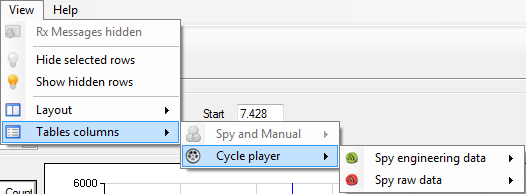

Click ‘Cycle player’ to get the grid columns commands of this mode.

The ‘Cycle player’ menu is divided in two parts:
 Engineering messages: containing columns control commands of the engineering data reception grid for the cycle panel.
Engineering messages: containing columns control commands of the engineering data reception grid for the cycle panel.

 Raw messages: containing columns control commands of the raw data reception grid for the cycle panel.
Raw messages: containing columns control commands of the raw data reception grid for the cycle panel.

Created with the Personal Edition of HelpNDoc: Easily create Help documents